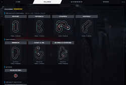

OmegaSim Wiki – die Idee dazu stammt von Gnen54. Hier stehen die offenen Artikel von Nutzer Luuke42 unter der Lizenz CC BY-SA 4.0.
Challenges
Stand dieses Artikels: OmegaSim 1.2.9 vom 26.10.2026 · Firmware des Autos: nicht bekannt (OmegaSim liest die Firmware-Version nicht aus)
Dieser Text wurde mithilfe von KI erstellt (Claude) und ist nicht in jedem Punkt von Menschen geprüft. Fehler bitte direkt verbessern oder auf der Diskussionsseite melden, siehe Mitmachen. Die öffentliche Fassung auf luuke42.github.io/omegasim kann älter sein als der hier beschriebene Stand.


Die Challenges (experimentell) sind feste Zeitfahraufgaben in OmegaSim: vorgegebene Strecken, die man mit echten Carrera HYBRID-Teilen nachbaut und unter gleichen Bedingungen fährt. Jede Runde wird gegen die Strecke geprüft, die Zeiten landen in einer lokalen und auf Wunsch in einer gemeinsamen Online-Bestenliste, und für jede gültige Zeit gibt es eine Medaille. Es gibt vier Kategorien wöchentlicher Strecken, die jeden Mittwoch wechseln, drei feste Dauerrennen und die Community-Bestzeiten, in denen Spieler eigene Strecken einreichen. Technisch benutzt eine Challenge die normale Rennmaschine (siehe Rennarten) und setzt nur deren Einstellungen fest; danach kommen die eigenen Einstellungen zurück.
Auf einen Blick
| Merkmal | Wert |
|---|---|
| Menüpfad | Reiter CHALLENGES (neben FAHREN, MEHRSPIELER, OPTIONEN) |
| Wöchentliche Challenges | 4 Kategorien (A, B, C, D) mit je 20 Strecken; Wechsel mittwochs 0:00 Uhr deutscher Zeit; Woche 1 = 30.09.2026 |
| Dauerrennen | Homington, Circuit Du Sol, Balkonia 50 Kilometers |
| Modi | Beste Runde, Rennen |
| Fahrgefühl | Pro (wöchentlich und Dauerrennen); Community: Arcade, Pro, GT3, F1, Realismus GT3 oder Pacejka |
| Prüfung | mindestens 90 % der Teile erkannt, Mindestrundenzeit bei 2,5 m/s, Einstellungen gesperrt |
| Medaillen | Bronze (gefahren), Silber (bis 1,5 × Gold), Gold (aus der Streckengeometrie) |
| Online | Google Sheet mit Apps-Script-Web-App; Upload ab Werk an |
| Status | experimentell; Community-Bestzeiten experimentell |
| Seit Version | 0.8.30 (Challenges), 0.8.44 (Wochenstrecken), 0.8.96 (Community) |
| Quelldateien | src/72-challenges.js, tools/challenges-apps-script.gs, src/70-race.js, src/98-presets.js
|
Grundlagen
Gleiche Bedingungen
Eine Bestenliste ist nur fair, wenn alle unter gleichen Bedingungen fahren. Eine Challenge legt deshalb das Fahrgefühl, das Wetter, den Tank, den Start und die Strecke fest und sperrt die Regler, solange sie läuft.
Zeitrechnung und Zeitzone
Computer zählen Zeit meist als Millisekunden seit dem 1.1.1970, 0:00 Uhr UTC (koordinierte Weltzeit). Deutschland liegt im Winter eine Stunde, im Sommer zwei Stunden vor UTC. Damit der Wechsel immer um Mitternacht in Berlin kommt, rechnet die App die aktuelle Zeit erst in die Wanduhr von Berlin um und zählt dann Wochen ab einem festen Anker: Mittwoch, 30.09.2026, 0:00 Uhr Berliner Zeit. Eine Woche hat 7 · 86 400 000 ms.
Rotation mit Rest
20 Strecken je Kategorie werden reihum gefahren. Die Nummer der Strecke ist der Rest der Wochenzahl bei Division durch 20 (Modulo): Woche 0 bis 19 ergibt 0 bis 19, Woche 20 wieder 0. Beispiel: 23 mod 20 = 3.
Zufall und Startwerte
Die Challenges selbst enthalten keinen Zufall: Strecken, Rundenzahlen und Medaillenzeiten sind fest. Zufall gibt es nur an zwei Stellen: in der Pause vor dem Start (1 bis 3 s, siehe Ampel) und bei der Gerätekennung, einer Zufallszeichenkette, die einmal erzeugt und dann gespeichert wird, damit die Bestenliste Läufe desselben Geräts erkennt. Ein Startwert in diesem Sinn ist der Ausgangszustand: Eine Challenge beginnt immer trocken, mit vollem Tank, neuen kalten Reifen und ohne Schaden.
Teilfolge statt Gleichheit
Das Auto liest beim Fahren jedes Streckenteil. Einzelne Fehllesungen kommen vor. Um eine Runde trotzdem fair zu prüfen, vergleicht die App die gelesene Folge mit der Sollfolge über die längste gemeinsame Teilfolge (englisch Longest Common Subsequence, LCS): die längste Folge von Teilen, die in beiden in derselben Reihenfolge vorkommt, wobei Lücken erlaubt sind. Beispiel: Soll R R R G R R, gelesen R R G R R (ein Teil fehlt) → gemeinsame Teilfolge R R G R R, Länge 5.
Perzentil
Ein Perzentil sagt, welcher Anteil anderer Werte schlechter ist. „Schneller als 80 % der Spieler“ heißt: 8 von 10 anderen Spielern sind langsamer.
Bedienung
- Reiter CHALLENGES öffnen. Oben stehen die vier Strecken der Woche mit der Woche (x/20) und den Tagen bis zum Wechsel, darunter die Dauerrennen und die Community-Bestzeiten.
- Eine Strecke antippen. Die Detailseite zeigt die Karte, die benötigten Teile, den Platzbedarf, die Medaillenzeiten und die Bestenliste. Modus (Beste Runde oder Rennen) wählen, wahlweise „Spiegeln“.
- Die Strecke mit echten Teilen nachbauen.
- Challenge starten. Die App fragt den Namen für die Bestenliste ab (höchstens 16 Zeichen, Pflicht) und zeigt das verbundene Auto. Ohne verbundenes Auto ist nur ein Probelauf möglich, der nicht gewertet wird.
- Das Auto auf Start/Ziel stellen und anhalten. Nach einer Sekunde Stillstand kommt der Startschirm, dann die Startampel.
- Fahren. Ein Frühstart bricht nicht ab, sondern wird bestraft (ab Werk +5 s auf die erste Runde). Jede Runde meldet, ob sie zählt.
- Am Ende erscheint das Ergebnis mit Zeit, Rang, Medaille und Upload-Status, mit den Knöpfen „Ergebnis ansehen“, „Nochmal“ und „Schließen“. Alle vorherigen Einstellungen sind wieder da.
Eigene Strecke einreichen
- Eine Strecke im Strecken- und Raum-Editor bauen oder einscannen.
- CHALLENGES → Community-Bestzeiten → Eigene Strecke einreichen. Die Vorschau zeigt die Strecke.
- Das Fahrgefühl wählen, mit dem alle die Strecke fahren, und einen Namen eintragen.
- Die Strecke bekommt eine vierstellige Nummer. Mit Zeit fahren wird sie im Modus Beste Runde gefahren.
Einstellungen
| Name in der App | Bereich | Standard | Wirkung (aus dem Code) | Interne ID / Speicher |
|---|---|---|---|---|
| Modus | Beste Runde, Rennen | Beste Runde | siehe Modi | chModus
|
| Spiegeln | an/aus | aus | Strecke rückwärts mit getauschten Kurven; eigene Bestenliste | chSpiegel
|
| Name in der Bestenliste | 0 bis 16 Zeichen | leer | erscheint in der Online-Liste | ch-fahrer, omegasim-ch-online
|
| Adresse der Web-App, CHALLENGES → Online | Text | die gemeinsame OmegaSim-Bestenliste | leer heißt nur lokal | ch-url
|
| Zeiten hochladen, CHALLENGES → Online | an/aus | an | schickt gewertete Zeiten an die Bestenliste | ch-hochladen
|
| Fahrgefühl einer Community-Strecke | Arcade, Pro, GT3, F1, Realismus GT3, Pacejka | – | beim Einreichen gewählt, gilt für alle; unbekannt heißt Pro | COMMUNITY_PRESETS
|
Während einer Challenge setzt die App (chAnwenden()):
| Einstellung | Wert in der Challenge |
|---|---|
| Fahrgefühl | Pro (wöchentlich, Dauerrennen); Community: das eingereichte; Studie: Sim+ |
| Steuerungsmodus | Physik; bei einem Pacejka-Fahrgefühl Pacejka (seit 1.2.4) |
| Renntyp | Beste Runde: Training; Rennen: Runden |
| Grenze | Beste Runde: Rundenzahl der Strecke (als Minuten); Rennen: Rundenzahl + 3 |
| Wetter | trocken, „Wetter ändert sich“ aus; Wetterfenster der Strecke, falls vorhanden |
| Pflichtstopps | je Strecke und Modus; mit Pflichtstopp Minigame und „Überall halten“ |
| Tank beim Start | 110 l |
| Fliegender Start | aus |
| Auf der Bahn | an |
| Strecke | die Challenge-Strecke (gespiegelt, wenn gewählt), Drehung 0 |
| NPCs | fahren nicht |
Funktionsweise
Aufbau der Wochenstrecken
| Kategorie | Inhalt | Teile | Runden im Modus Rennen | Pflichtstopp im Rennen |
|---|---|---|---|---|
| A | kurze Kurse | Grundpackung | 12 | nein |
| B | lange Kurse | Grundpackung | 10 (Suzuna 8) | nein |
| C | Kurse mit beiden Haarnadeln | Grundpackung und Haarnadel-Set | 8 | nein |
| D | schnelle Kurse mit weiten 30-Grad-Bögen | Grundpackung und 30°-Außenkurven-Set | 8 | ja, einer |
Alle 80 Strecken sind geschlossen, kreuzungsfrei (Bahnen mehr als 30 cm auseinander), höchstens 2,6 × 2,6 m groß und aus den Teilen ihrer Kategorie baubar; ein Selbsttest prüft das. Jede Strecke hat eine feste Kennung (z. B. wa01-imolina); die vier ersten Strecken behielten ihre alten Kennungen oval, schlange, kehre und weitblick, damit ihre Bestenlisten weiter gelten. Eine Bestenliste hängt an der Kennung und gilt wieder, wenn die Strecke nach 20 Wochen zurückkommt.
Dauerrennen (rotieren nicht):
| Strecke | Teile | Runden | Besonderheiten |
|---|---|---|---|
| Homington | Grundpackung | 20 | |
| Circuit Du Sol | Grundpackung und Haarnadel-Set | 20 | |
| Balkonia 50 Kilometers | 2 × Grundpackung und Haarnadel-Set | 100 | ein Pflichtstopp; Regen von Minute 2 bis Minute 4; Gold fest bei 16 s je Runde |
Die Strecken stehen als Streckencode im Programm, zum Beispiel Imolina SRRRGRRR (Start, drei Rechtskurven, eine Gerade, drei Rechtskurven).
Wöchentliche Rotation
chWoche() in src/72-challenges.js:
Wand = Berliner Wanduhr als UTC-Zahl (chBerlinWand) Anker = 30.09.2026, 0:00 (CH_ANKER) n = max(0, floor((Wand − Anker) / 7 Tage)) Index = n mod 20 → Strecke A[Index], B[Index], C[Index], D[Index] Woche = Index + 1 (Anzeige x/20) nächster = Anker + (n + 1) · 7 Tage Tage = ceil((nächster − Wand) / 1 Tag)
// src/72-challenges.js, chWoche
const wand = chBerlinWand(ms === undefined ? Date.now() : ms);
const n = Math.max(0, Math.floor((wand - CH_ANKER) / CH_WOCHE_MS));
const naechste = wand < CH_ANKER ? CH_ANKER + CH_WOCHE_MS
: CH_ANKER + (n + 1) * CH_WOCHE_MS;
return { index: n % 20, woche: (n % 20) + 1,
tage: Math.ceil((naechste - wand) / 86400000) };
Weil die Rechnung auf der Wanduhr läuft, hat jeder Tag genau 24 Stunden, auch über die Zeitumstellung hinweg. Kennt das Gerät keine Zeitzonen-Daten, nimmt die App Winterzeit an (UTC + 1 h). Vor dem Anker gilt Woche 1.
Modi
| Modus | Renntyp intern | Ende | Wertung |
|---|---|---|---|
Beste Runde (hotlap) |
Training mit Ampel | nach so vielen Minuten, wie die Strecke Runden hat, oder von Hand | schnellste gültige Runde |
Rennen (rennen) |
Runden, Grenze = Soll + 3 | nach Soll + 3 Runden; von Hand beendet ist abgebrochen | Summe der ersten Soll-Runden unter den gültigen |
Im Rennen dürfen also bis zu drei Runden verpatzt werden (CH_EXTRA_LAPS); die Strecke wird nie früher beendet. Gewertet wird (chWertung()):
ungültig, wenn Einstellungen geändert
Rennen: ungültig, wenn abgebrochen, Pflichtstopp fehlt oder weniger als Soll gültige Runden
Zeit = Summe der ersten Soll gültigen Runden
Beste Runde: ungültig, wenn keine gültige Runde
Zeit = schnellste gültige Runde
gültige Runde = Teileprüfung bestanden und Rundenzeit ≥ Mindestrunde
Die Uhr läuft ab dem Erlöschen der Ampel und nicht ab der ersten Bewegung, damit Zögern am Start nicht gratis ist. NPCs fahren nicht mit.
Prüfungen gegen Schummeln
1. Teileprüfung je Runde (chRundePruefen()). Verglichen wird die Art jedes Teils (G gerade, R Rechtsdrehung, L Linksdrehung), nicht der genaue Code; Start/Ziel und „abseits“ (0x00) werden übergangen.
Soll = Teile der Strecke ohne Start, als G/R/L Spiegel = Soll rückwärts, R und L getauscht erkannt = max(LCS(Soll, gelesen), LCS(Spiegel, gelesen)) Quote = erkannt / max(|Soll|, |gelesen|) gültig ⇔ Quote ≥ 0,9 (CH_PRUEF_QUOTE)
Ein fehlendes, ein falsches oder ein zusätzliches Teil kostet je eines. Eine kürzere oder andere Bahn fällt heraus, eine einzelne Fehllesung auf einer Strecke mit mindestens 10 Teilen nicht. Wer die Strecke andersherum fährt, wird über den Spiegel erkannt. Darum läuft jede Challenge in der Stellung „Auf der Bahn“: nur dort meldet das Auto jedes Teil.
2. Mindestrundenzeit:
Mindestrunde = Streckenlänge / 2,5 m/s (CH_VMAX_MS, chMinRundeMs)
2,5 m/s liegt rund 50 % über der gemessenen Vollgasgeschwindigkeit der Autos (1,64 m/s). Eine schnellere Runde ist keine ganze Runde dieser Strecke.
3. Sperre: Die Regler der Optionen, der Steuerungsmodus, „Auf der Bahn“ und der Fahrmodus-Knopf im Cockpit sind ausgegraut (chSperre()). Zweimal je Sekunde vergleicht chWachen() die Werte des Fahrgefühls, den Steuerungsmodus und „Auf der Bahn“ mit dem Stand beim Start. Weicht einer ab (etwa über ein Tastenkürzel), wird die Challenge abgebrochen und nicht gewertet.
4. Prüfung im Apps Script (pruefen() in tools/challenges-apps-script.gs):
| Prüfung | Ablehnung mit |
|---|---|
| Kennung der Challenge bekannt (alle 80 Wochenstrecken und die 3 Dauerrennen) | „unbekannte Challenge“ |
| Modus Beste Runde oder Rennen | „unbekannter Modus“ |
| Fahrgefühl Pro oder Arcade (Arcade aus älteren Fassungen) | „unbekanntes Preset“ |
| Zeit ≥ Mindestrunde der Strecke (im Skript 4 % unter dem Wert der App) und ≤ 1 Stunde | „Zeit unplausibel“ |
| alle Rundenzeiten sind Zahlen | „Rundenzeit unplausibel“ |
| Rennen: mindestens Soll Runden | „Rundenzahl stimmt nicht“ |
| Rennen: die ersten Soll Runden je ≥ Mindestrunde | „Runde unter der Mindestzeit“ |
| Rennen: Summe der ersten Soll Runden = Zeit (± 50 ms) | „Gesamtzeit passt nicht zu den Runden“ |
| Beste Runde: schnellste Runde = Zeit (± 50 ms) | „beste Runde passt nicht zu den Runden“ |
| Gerätekennung vorhanden | „keine Geräte-Kennung“ |
| höchstens ein Eintrag je Gerät alle 15 s | „zu schnell hintereinander“ |
Für Community-Strecken gelten eigene Prüfungen: Streckencode aus Großbuchstaben, Ziffern und @ (3 bis 200 Zeichen), Fahrgefühl aus der Liste (sonst Pro), bekannte Streckennummer, Zeit zwischen 1 s und 1 Stunde, höchstens ein Eintrag je Gerät alle 10 s.
Medaillen
Geometriezeit einer Runde (chGeoGold()): Geraden bei der gemessenen Vollgasgeschwindigkeit, Kurven langsamer.
t_geo = Länge_Geraden / 1,64 m/s + Länge_Kurven / 0,565 m/s
Die Kurvengeschwindigkeit 0,565 m/s ist an der besten Imolina-Runde mit Pro kalibriert (4,639 s auf 3,18 m).
Gold (chGoldFormel()) ist eine Gerade durch zwei Bezugspunkte: Balkonia 16 s und die Strecke SGR4LGHG 7,3 s. Eine kurze Strecke hat einen festen Anteil (Anfahren, Haarnadel), der nicht mit der Länge schrumpft.
f = (7300 − 16000) / (t_geo(SGR4LGHG) − t_geo(Balkonia)) c = 16000 − f · t_geo(Balkonia) Gold = c + f · t_geo (ms je Runde) Silber = 1,5 · Gold Bronze = gültig gefahren
Eine Strecke kann ihre Gold-Zeit fest vorgeben (Balkonia 16 s, CH_GOLD_REFERENZ). Im Modus Rennen werden beide Schwellen mit der Rundenzahl multipliziert (chSterne()). Aus den Teillängen im Code (Gerade 43 cm, 60-Grad-Kurve mit Radius 37 cm, Haarnadel mit Radius 18,5 cm und Vorlauf) ergeben sich f ≈ 0,978 und c ≈ 1538 ms.
Bestenliste und Rang
- Lokal werden je Strecke, Modus und Fahrgefühl die 30 besten Läufe gespeichert (
omegasim-challenges). - Online zählt je Gerät nur die beste Zeit (
chBesteJeSpieler()); die eigene, eben gefahrene Zeit wird sofort hinzugefügt, auch wenn der Schnappschuss älter ist. - Rang:
Platz = Anzahl schnellerer Zeiten + 1; Perzentil = Anteil der anderen Zeiten, die langsamer sind. Online heißt es „Du warst schneller als p % der Spieler“, lokal „Schneller als p % deiner eigenen Läufe“. Die Kachel zeigt „TOP x %“ mit x = 100 − p, ab zwei Zeiten. - Histogramm: k = min(10, max(3, ⌈√n⌉)) gleich breite Klassen zwischen schnellster und langsamster Zeit.
- Beste 3er-Serie: die kleinste Summe dreier aufeinanderfolgender Runden, die alle über der Mindestrunde liegen (
chDreierBeste()).
Community-Bestzeiten
- Eine eingereichte Strecke bekommt eine vierstellige Nummer (0001, 0002 …), der Name höchstens 32 Zeichen. Gibt es dieselbe Strecke schon, auch gespiegelt (
communityGleiche(): gleicher Code oder gleicher Code nach Spiegeln), wird keine neue angelegt. - Gefahren wird sie als Challenge im Modus Beste Runde mit dem eingereichten Fahrgefühl und derselben Teileprüfung; die Zeit geht in die Community-Liste, nicht in die Wochenbestenliste.
- Die Liste ist zuerst nach der neuesten Zeit, dann nach der Zahl verschiedener Spieler (Geräte) sortiert. Je Strecke werden lokal höchstens 50 Zeiten gehalten.
- Die gemeinsame Liste wird höchstens alle 2 Minuten geholt (Blätter „Community“ und „CommunityZeiten“) und mit den eigenen Daten zusammengeführt. Eigene Strecken, die online fehlen, werden beim nächsten Abgleich still nachgereicht, höchstens drei auf einmal im Abstand von 11 s.
Senden und Abrufen
Senden (chHochladen(), chEintragSenden()):
- Eine gewertete Zeit wird lokal gespeichert und in eine Warteschlange gelegt (
omegasim-ch-ausgang, höchstens 50 Einträge). - Läuft gerade ein Countdown, ein Rennen oder eine Auslaufrunde, wartet sie: während der Fahrt gibt es keinen Netzverkehr der Bestenliste, damit der 45-ms-Sendetakt nicht gestört wird; nachgeholt wird 20 s später.
- Gesendet wird ein POST mit Text (kein JSON-Kopf, damit kein CORS-Vorabruf nötig ist). Inhalt: Challenge, Modus, Fahrgefühl, Soll-Runden, Zeit, alle Rundenzeiten, Autoname, Name, Gerätekennung, App-Version und seit 1.0.21 die Spur der schnellsten Runde für Telemetrie und Challenger.
- Antwortet das Skript nicht (Googles Weiterleitung liefert gelegentlich 404), wird bis zu zweimal nach 1,5 s wiederholt. „Zu schnell hintereinander“ beim Wiederholen heißt: der erste Versuch ist angekommen.
- Die Zeit verlässt die Schlange erst, wenn das Sheet sie bestätigt oder endgültig mit Grund ablehnt. Eine Ablehnung wird als Meldung mit Strecke und Grund gezeigt, nie mitten im Rennen.
- Was noch wartet, wird beim Start der App, alle 10 Minuten, bei wiederkehrender Verbindung und mit „Jetzt senden“ nachgereicht, je Eintrag im Abstand von 16 s (das Skript nimmt je Gerät höchstens einen alle 15 s an).
Abrufen (chAuffrischen(), chListeLaden()):
- Zuerst der Schnappschuss
data/challenges.jsonim Repository, den eine GitHub-Action regelmäßig aus dem Sheet schreibt; er gilt, solange er jünger als 8 Stunden ist. - Danach alle Listen auf einmal vom Skript (Abfrage „alle“), höchstens alle 2 Minuten, beim Start und alle 10 Minuten im Hintergrund, nach einem Upload sofort.
- Der vollständige Satz liegt im Zwischenspeicher (
omegasim-ch-cache) und gilt sofort; eine Strecke, die darin fehlt, hat keine Zeiten. - Fehlt beides, wird eine einzelne Liste direkt abgefragt, mit einer Wiederholung nach 1,2 s.
Eine E-Mail-Adresse oder ein Konto gibt es nicht. Wer eine eigene Liste betreiben möchte, legt ein eigenes Google Sheet mit dem Skript aus tools/challenges-apps-script.gs an (die Anleitung steht am Anfang der Datei) und trägt die Adresse seiner Bereitstellung ein. Das Skript ist auf das eine Sheet beschränkt (@OnlyCurrentDoc). Für Pacejka-Community-Strecken muss ein eigenes Skript seit 1.2.4 neu bereitgestellt werden, weil die Liste der erlaubten Fahrgefühle dort und in der App gleich sein muss.
Erlaubte Fahrgefühle
| Fahrgefühl | Wöchentlich und Dauerrennen | Community-Strecken |
|---|---|---|
| Pro | ja (immer) | ja, auch Rückfallwert |
| Arcade | nein (bis 0.8.80 möglich; das Skript nimmt es noch an) | ja |
| GT3, F1, Realismus GT3 | nein | ja |
| Pacejka | nein | ja, seit 1.2.4; fährt im Steuerungsmodus Pacejka |
| Sim+, Omega, RC | nein | nein |
Die Studie OmegaLab hat eine eigene Fahrverhaltens-Challenge: 5 Runden auf Homington mit Sim+, ohne Bestenliste, ohne Medaillen und ohne Upload unter einem Namen.
Beispiele
Beispiel 1: Welche Strecken gelten am 26.10.2026?
Montag, 26.10.2026, 12:00 Uhr in Berlin.
- Wand − Anker = 26 Tage 12 Stunden.
- n = floor(26,5 / 7) = 3; Index 3 mod 20 = 3; Woche 4/20.
- Strecken: A Brandsby (
wa04), B Montrealle (wb04), C Singaporta (wc04), D Reimsville (wd04). - Nächster Wechsel: Anker + 4 Wochen = Mittwoch, 28.10.2026, 0:00. Bis dahin 1,5 Tage, angezeigt „2 Tage“.
In der 21. Woche (ab Mittwoch, 17.02.2027) ist n = 20, Index 0: dann kommen Imolina, Monzetta, Monte Carlito und Silverbrook zurück.
Beispiel 2: Medaillen auf Imolina
Imolina SRRRGRRR: zwei gerade Teile (Start und Gerade) zu 0,43 m, sechs 60-Grad-Kurven zu 0,3875 m.
- Länge 3,185 m; Mindestrunde 3,185 / 2,5 ≈ 1,27 s (das Skript lehnt erst unter 1,22 s ab).
- t_geo = 0,86 / 1,64 + 2,325 / 0,565 ≈ 0,524 + 4,115 = 4,639 s.
- Gold = 1538 + 0,978 · 4639 ≈ 6,07 s; Silber ≈ 9,11 s je Runde.
- Rennen über 12 Runden: Gold bis etwa 72,9 s, Silber bis etwa 109 s.
Diese Werte sind aus den Formeln und Teillängen im Code nachgerechnet; die App zeigt sie auf der Detailseite auf Zehntelsekunden gerundet.
Beispiel 3: Teileprüfung
Imolina hat ohne Start 7 Teile (R R R G R R R). Gelesen wird in einer Runde R R G R R R (eine Kurve nicht erkannt): LCS = 6, Quote 6/7 ≈ 0,86, unter 0,9, die Runde zählt nicht. Auf einer Strecke mit 12 Teilen und einer Fehllesung: 11/12 ≈ 0,92, die Runde zählt. Auf sehr kurzen Strecken darf also kein Teil fehlen.
Beispiel 4: Rennen mit verpatzter Runde
Kategorie A, 12 Runden Soll, gefahren werden 15. Runde 4 wird nicht erkannt. Gültig sind die Runden 1 bis 3 und 5 bis 15; gewertet wird die Summe der Runden 1 bis 3 und 5 bis 13 (die ersten zwölf gültigen).
Grenzen und bekannte Probleme
- Die Challenges sind experimentell.
- Hochgeladen werden alle Rundenzeiten, auch ungültige. Das Skript prüft im Rennen die ersten Soll-Runden der Liste und in Beste Runde die schnellste der Liste. Liegt eine ungültige, aber nicht zu schnelle Runde (Teile nicht erkannt) unter den ersten Soll-Runden oder ist sie schneller als die beste gültige, passen App-Zeit und Rundenliste nicht zusammen, und das Skript lehnt mit „Gesamtzeit passt nicht“ bzw. „beste Runde passt nicht“ ab. Das ergibt sich aus dem Code und ist noch nicht im Betrieb bestätigt.
- Im Modus Beste Runde ist die Grenze die Rundenzahl der Strecke, als Minuten gelesen (Kategorie A also 12 Minuten, Community-Strecken 1 Minute); danach endet der Lauf. Ob das so beabsichtigt ist, ist noch nicht gesichert.
- Die Stillstandsprüfung vor der Ampel vergleicht das Modelltempo mit dem Wert 1 (
CH_STILL_KMH); in Modelleinheiten ist das ein Viertel der Höchstgeschwindigkeit. Die Ampel kommt deshalb schon bei langsamer Fahrt; noch nicht gesichert, ob gewollt. - Die Teileprüfung vergleicht nur Gerade, Rechts und Links; eine weite 30-Grad-Kurve und eine 60-Grad-Kurve gelten als gleich.
- Die Medaillenzeiten beruhen auf zwei Bezugspunkten und geschätzten Kurvengeschwindigkeiten; der Code sieht weitere Kalibrierpunkte vor.
- Die Online-Liste hängt an einem Google-Dienst; Antworten kommen gelegentlich als 404 zurück.
Versionsgeschichte
| Version | Änderung |
|---|---|
| 0.8.30 | Challenges (experimentell): vier feste Strecken, Beste Runde und Rennen, Pro-Preset, Bestenliste mit Histogramm und Perzentil, Online über Google Sheet. |
| 0.8.34 | Schnappschuss der Bestenliste im Repository. |
| 0.8.37 | Gegen Schummeln: Teileprüfung (90 %), Mindestrundenzeit, Sperre der Einstellungen. |
| 0.8.39 | Frühstart nur bestraft, nicht abgebrochen; Pflichtstopp in Kategorie D. |
| 0.8.44 | Wochenstrecken: 4 × 20, Wechsel mittwochs; Schnappschuss bis 8 h gültig. |
| 0.8.79 | Medaillen Bronze, Silber, Gold aus der Streckengeometrie. |
| 0.8.80 | Nur noch Pro, Arcade entfernt. |
| 0.8.96 | Community-Strecken. |
| 0.9.10 | Community-Strecken für alle über das Sheet; Dauerrennen im Skript bekannt. |
| 0.9.20 | Gold kalibriert an Balkonia (16 s). |
| 0.9.33 | Warteschlange für Uploads, Meldung bei Ablehnung, Zwischenspeicher, kein Netzverkehr während der Fahrt. |
| 0.9.45 | Community-Bestzeiten mit Fahrgefühl der einreichenden Person. |
| 0.10.6 | Gold als Gerade durch zwei Bezugspunkte. |
| 1.0.21 | Spur der schnellsten Runde wird mit hochgeladen. |
| 1.0.25 | Gold auf SGR4LGHG 7,3 statt 7,2 s.
|
| 1.1 (1.1.22) | Challenges schalten „Wetter ändert sich“ immer aus. |
| 1.2 (1.2.4) | Community-Challenges auch mit Pacejka (Apps Script neu bereitstellen); Pacejka bleibt in einer Challenge im Modus Pacejka. |
Siehe auch
Quellen im Code
src/72-challenges.js:CH_KATALOG,CH_DAUER,CH_STUDIE,CH_ANKER,chBerlinWand(),chWoche(),chAktuelle(),chRundePruefen(),chLcs(),chMinRundeMs(),chSpiegelTiles(),chWertung(),chGeoGold(),chGoldFormel(),chSterneSchwellen(),chSterne(),chPerzentil(),chHistogramm(),chDreierBeste(),chBesteJeSpieler(),chAnwenden(),chZuruecksetzen(),challengeStarten(),chWachen(),chSperre(),challengeRundeFertig(),challengeRennenEnde(),chHochladen(),chEintragSenden(),chAusgangSenden(),chAuffrischen(),chListeLaden(),chNetzErlaubt(),chGeraet(),COMMUNITY_PRESETS,communityEinreichen(),communitySicht(),communityAbgleichen(),communitySortiert()tools/challenges-apps-script.gs:doPost(),pruefen(),communityPost(),doGet(),CHALLENGES,C_PRESETSsrc/70-race.js:startRaceCountdown()(Wetterfenster),raceGreen()(Uhr ab Grün),playerLapCrossed()src/60-track.js:trackLaengeM(),codeToTrack()
Weblinks
- Browserfassung, Android-App und Quellcode: Links auf der Hauptseite